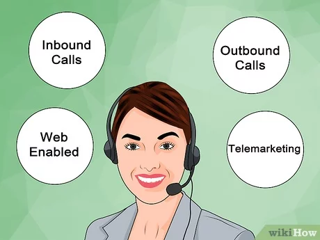

Respond to customer queries and customers' concerns over the phone. Making outbound calls to Customers as required. Provide support for Recovery of the account for the end user. Maintain a deep understanding of client process and policies. Provide excellent customer service to our customers. You should be responsible to exhibit capacity for critical thinking and analysis. Responsible to showcase work ethic, with the ability to work well both independently and within the context of a larger reciprocal environment.
Qualifications we seek in you:
Minimum qualifications: Graduates with experience (must) in Customer Service and
experience in credit cards/banking/customer service. Experience in customer
service processes. Excellent communication skills in English and Hindi. Ability
to provide great customer experience/solve customer issues/ability to upsell. A
capacity to work on a computer efficiently for extended periods of time. Meeting
the process CTQ’s on a daily/weekly/monthly basis.

Inbound calls are phone calls that customers initiate and are received by a contact center or business. Inbound calls can be made for a variety of reasons, such as questions, complaints, suggestions, or doubts.
Inbound calls can be handled by a contact center, which can be in-house or outsourced, or by a business’s staff.
Contact centers can be exclusively inbound, exclusively outbound, or a mix of both.
Automatic Call Distribution (ACD) is a system that uses algorithms to route calls to the most suitable agent.
Agents help customers resolve their issues and concerns.
Agents can promote positive communication by using positive language and an empathetic tone of voice.
Inbound calling can be expensive, so it’s important to research whether it’s the right channel for your brand
We Are Dealing With Inbound Calls, Outbound Calls, Web Calls, Telemarketing: To set up appointments Outbound calls are different from inbound calls, which are initiated by customers and received by contact center representatives. Outbound call centers use dialing tools, lead management systems, and performance analytics to reach a broader audience and optimize sales efforts. They may also use predictive dialing systems to automatically make outgoing calls and screen out busy signals, voicemail, and other issues.
Qualifications we seek in you:
A web call is a real-time audio and video interaction over the internet that uses Voice over Internet Protocol (VoIP) for voice and video codecs. Web calls allow people to communicate with each other in real time, regardless of their location.
Web calls can be made using computers, smartphones, or other internet-connected devices. They can connect to both other VoIP users and traditional phone numbers.
Some VoIP services only allow you to call other people using the same service, while others allow you to call anyone with a telephone number. Some VoIP services only work over a computer or a special VoIP phone, while others allow you to use a traditional phone connected to a VoIP adapter.
Web calling is another term for voice calling that is embedded into a website
An outbound call is a call made by a call center agent to a customer or prospect, typically for sales, marketing, or other purposes:
To generate interest in a company’s product or service, or to close a sale
To make contact with existing customers, for example to update contact lists or renew services
To conduct market research
To set up appointments Outbound calls are different from inbound calls, which are initiated by customers and received by contact center representatives.
Telemarketing is the direct marketing of goods or services to potential customers over the telephone or the Internet. Four common kinds of telemarketing include outbound calls, inbound calls, lead generation, and sales calls.
Market research is the process of collecting vital information about a company’s target audience, market, and competition. Through market research, companies can understand their target audience better. They can make better products, improve user experience, and design a marketing strategy that attracts quality leads
Telesales is the selling of a company’s products or services by phone, either by phoning possible customers or by answering calls from customer
Appointment setting is a business strategy that involves scheduling meetings with potential customers to discuss a product or service and potentially make a sale. Appointment setting services can be provided by an outsourced company, which can help businesses bring in new prospects and grow their client base.
Appointment setting is a key part of the sales process, and can help convert prospects into clients.
Appointments are a way for businesses to strengthen relationships with customers, and provide a mutually beneficial exchange.
Appointment setting can help businesses grow their client base and foster enduring partnerships. Appointment setters are professionals who contact potential customers to arrange meetings with sales teams. They may use telemarketing to explain a company’s offerings and gauge interest. Appointment setters are also known as inside sales representatives or appointment generators.
Telemarketing, Lead Generation services, Market Research, Tele sales, Appointment Setting Services.
Telemarketing is the direct marketing of goods or services to potential customers over the telephone or the Internet. Four common kinds of telemarketing include outbound calls, inbound calls, lead generation, and sales calls.
Lead generation services are third-party companies that help businesses find and engage potential customers, or leads. They use a variety of methods to attract and capture leads, such as :
To set up appointments Outbound calls are different from inbound calls, which are initiated by customers and received by contact center representatives.
Lead generation services are often used in conjunction with other marketing tactics, such as website optimization and email campaigns. The goal of lead generation is to guide potential customers through the sales funnel until they are ready to make a purchase. This process involves: Increasing brand awareness, Building community relationships, Generating high-quality leads, and Completing a sale